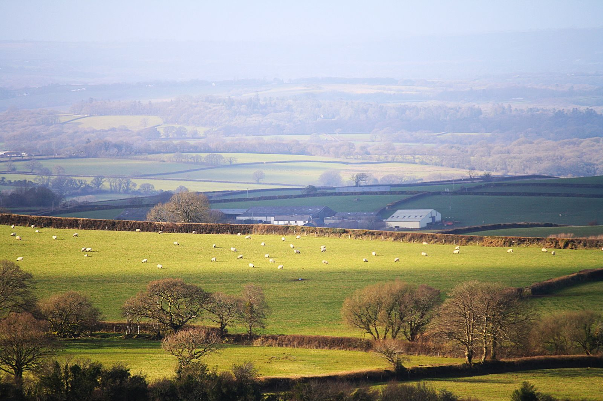

Experto SEO en Devon
Exeter, Torquay, Plymouth, Barnstaple: las empresas de Devon atienden a los lugareños durante todo el año y a los turistas en oleadas. Ayudo a las empresas de Devon a ganar ambos con una búsqueda que funciona en cada temporada.

Por qué las empresas de Devon permanecer invisible
Sigo viendo tres patrones en las empresas de Devon y la idea detrás de cada uno de ellos.
El verano trae multitudes; el invierno trae el silencio. La mayoría de los sitios de Devon aprovechan la ola en lugar de planificar ambas estaciones.
Devon es enorme y está extendido. Una única presencia genérica desfavorece a Exeter, a la costa y a los páramos por igual.
Las tiendas agrícolas, los B&B y los comercios en South Hams o North Devon asumen que el SEO es para empresas de la ciudad. No lo es.
Devon necesita dos estrategias en una: turismo de verano y turismo local durante todo el año. Mapeo palabras clave para ambos, construyo páginas a nivel de ciudad en todo el condado y mantengo el flujo de contenido durante los meses tranquilos. Una persona lo hace todo.
Dos Devons, una estrategia
El Devon que un turista busca en Google en julio (“playas cerca de Torquay”, “paseos por Dartmoor”) no es el Devon que busca un local en enero (“plomero Exeter”, “tienda agrícola cerca de mí”).
Creo mapas de palabras clave para ambos Devons (estacionales y durante todo el año) para que su visibilidad no hiberne cuando los turistas se van.
- ✓Mapas de palabras clave estacionales y durante todo el año
- ✓Páginas a nivel de ciudad: Exeter, Torquay, Plymouth, Barnstaple
- ✓Perfil comercial de Google con publicaciones de temporada
Rural no significa invisible
Algunas de las mejores empresas de Devon se encuentran en las calles rurales. Sus clientes todavía empiezan en Google: "tienda agrícola South Hams", "B&B cerca de Dartmoor".
Me aseguro de que las empresas rurales de Devon aparezcan en las búsquedas importantes, con páginas y perfiles locales que aparecen encima de su código postal.
LA SOLUCIÓN: cuatro pasos
Cuatro pasos, para cada temporada de Devon.
Por qué las empresas de Devon elige Globe Skillz
Por qué las empresas de Devon eligen Globe Skillz.
| lo que obtienes | Por qué es importante |
|---|---|
| Un especialista, todo el condado | Auditoría del contenido mensual: lo hago todo, para cada ciudad a la que presta servicios. |
| Planificación consciente de la temporada | Su calendario de contenido sigue las temporadas reales de Devon, no una plantilla genérica. |
| Informes en inglés sencillo | Qué se movió, qué hice, qué sigue: mensualmente. |
| Respuestas directas | Hablas con la persona que hace el trabajo. Respuestas rápidas y honestas. |
Un plan. Todo incluido.
- ✓SEO on-page
- ✓SEO técnico
- ✓SEO off-page y autoridad
- ✓Enlaces de socios desde el 3.er mes
- ✓SEO local para 1 zona o ciudad
- ✓SEO con IA: AEO, GEO y AISO
- ✓Informe mensual
- ✓WhatsApp directo o tu plataforma preferida
Un plan para Devon. Todo lo anterior, todos los meses. Mes a mes: cancele en cualquier momento.
Los problemas de Devon los soluciono
Cada negocio de Devon con el que trabajo comienza con uno de estos tres. Cada uno tiene una solución coincidente en el plan.
La solución
Contenido para todo el año, incluidos los meses tranquilos, para que el invierno traiga reservas, no silencio.
La solución
El turismo y la intención local se mapean por separado, ciudad por ciudad, con la optimización del perfil realizada por impacto.
La solución
Reparaciones técnicas, trabajo en la página y optimización de perfiles: el SEO no es sólo para empresas de la ciudad.
Consigue tu auditoría SEO gratuita para tu negocio
Revisaré personalmente su sitio y sus competidores de Devon (a lo largo de las temporadas) y le enviaré una lista de soluciones priorizadas. Gratis.
Solicita mi auditoría gratuitaDevon preguntas, respondidas.
Preguntas reales de empresas de Devon, respondidas directamente. Cualquier otra cosa, pregúntame a continuación.
Listo para hacer crecer tu Devon negocio?
Reserve una llamada estratégica gratuita de 30 minutos. Auditaré su visibilidad en Devon en vivo (sus listados de Exeter, sus reseñas, sus páginas) y le diré exactamente qué se necesitaría para llegar al top 3.